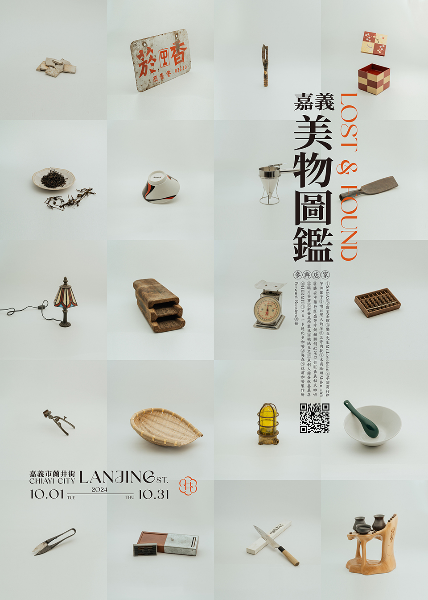
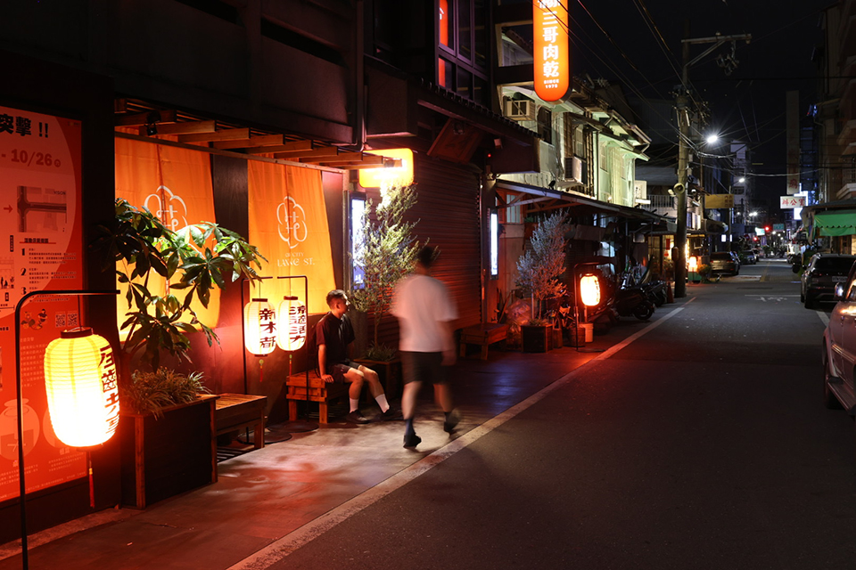

揪作伙 Co-Living
嘉義美街／美物圖鑑計畫
工策會 112 年在成仁街主辦「嘉義美街圖鑑」，協助串聯店家並導入設計及數位應用，以創新的體驗內容AR擴增實境吸引遊客走讀街區、閱讀城市，計畫榮獲第十一屆台灣景觀大獎「溝通傳播類傑出獎」及 2023 台灣設計 BEST 100 「年度概念展演活動」殊榮。


今年工策會將「美」的品牌延伸，以蘭井街及周邊街區為主場域推出「嘉義美物圖鑑」，將店家傳承的老物件為核心敘說產業及街區故事，讓城市裡的市井物事能再被發揚、被發現，計畫也再次獲得 2024 台灣設計 BEST 100 「在地文化新演繹」肯定。


今年「嘉義美物圖鑑」為蘭井街設計街徽，串聯20間店家推出集章刊物，遊客掃描刊物QRcode可體驗店家線上運勢指南，除了介紹店家「物件」也行銷商品資訊，同時也邀請「弘義燈籠」師傅鄒弘義手繪串聯店家的專屬燈籠，以橘燈籠運動為店家識別推出消費集章贈禮等活動帶動店家共榮、共好，也創造旅客來嘉新體驗；計畫內容還有竹編燈籠、薰香藥包、城隍廟展區、懸浮投影、夜覽走讀等八個特色，此外，也與都市發展處合作，於蘭井街與忠孝路口辦理「街道突擊─人本環境快閃體驗」，由市府發動與店家、學子、社區聯手共創快閃式街道佈設，為長期人本環境空間改善暖身，當每一個店家門口都好走、好做生意，街區就更活絡更有活力！